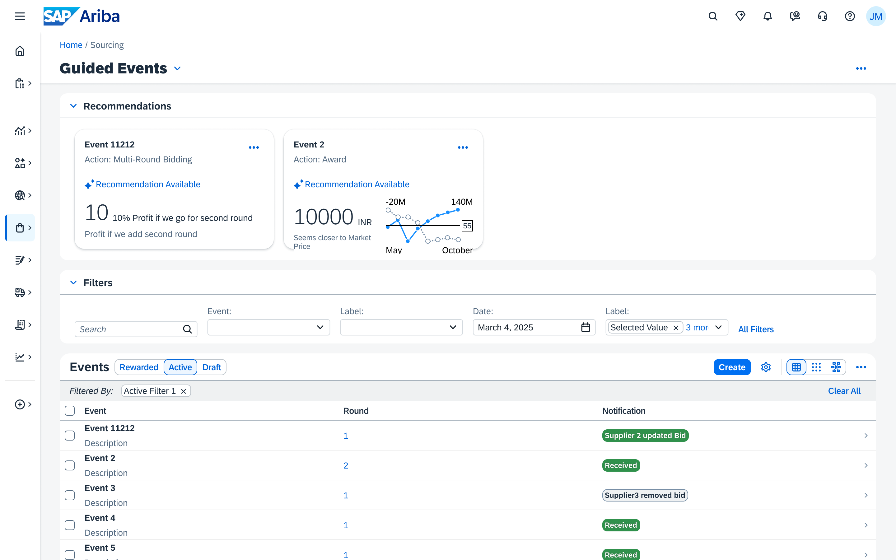
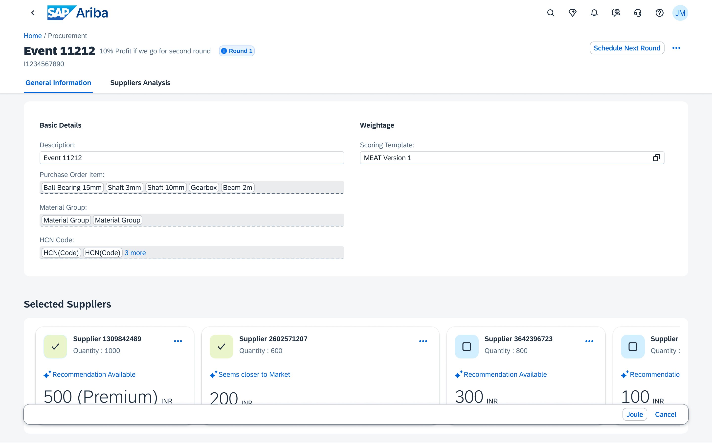
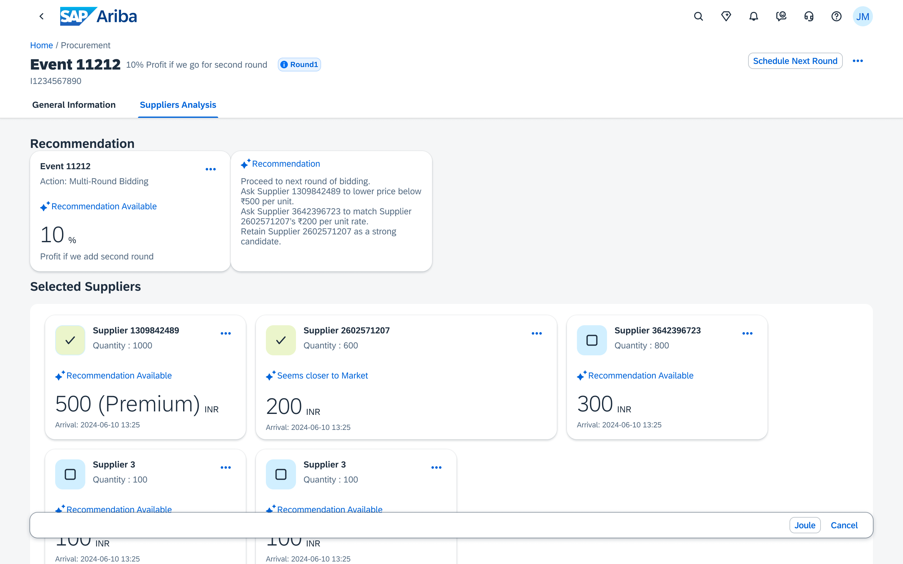
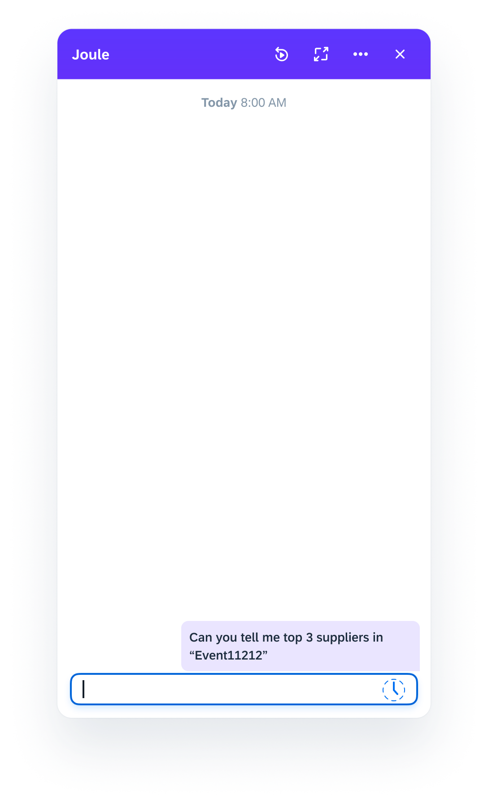
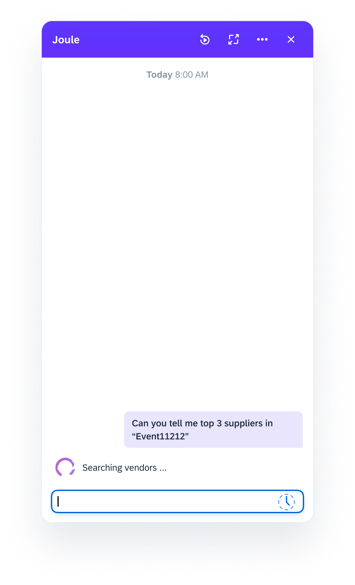
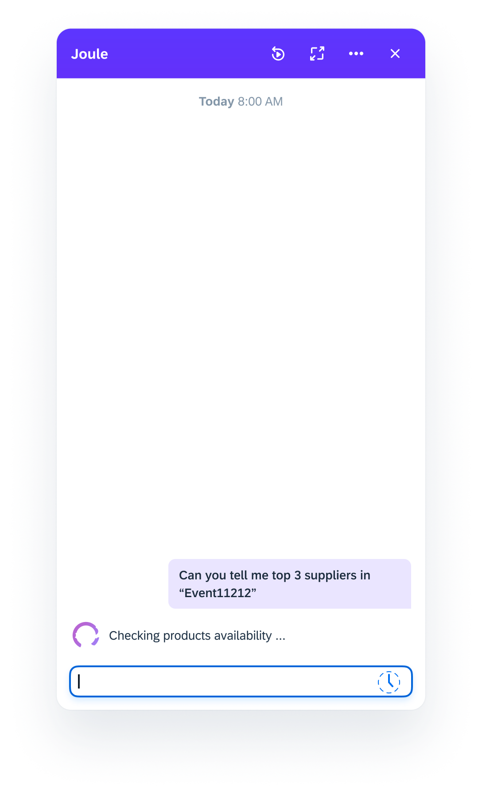
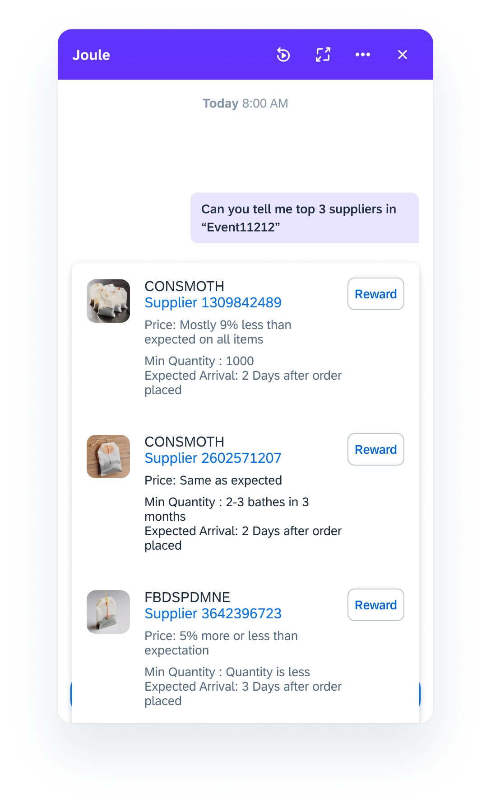

EffiSource AI — an Agentic AI POC built on SAP Ariba and BTP that automates multi-round auction decisions, surfaces pricing history, and scores supplier bids so procurement teams move from weeks of manual work to data-driven decisions in days.
Procurement teams running multi-round supplier auctions on SAP Ariba have no AI assistance at any step — they compare bids manually, rely on intuition for negotiation decisions, and rarely leverage historical pricing data. EffiSource AI closes that gap.
An AI Agent monitors live sourcing events and recommends whether to open a new round, accept a bid, or push for a lower BAFO — powered by historical pricing, event profiles, and real-time market benchmarks.
Many purchase items lack standard codes or serial numbers. The agent uses ML and LLM text analysis to identify non-codified items and map them to historical records, unlocking pricing insights that would otherwise be invisible.
AI analyses negotiation patterns and recommends counteroffers, concessions, and trade-offs. It predicts the likelihood of acceptance for a given strategy — helping sourcing specialists maximise contract value on every deal.
Learns from past auctions to recommend the most suitable format, starting price, increment, and duration — so each new sourcing event benefits from every prior one.
Decision maker buyers: CFOs, CPOs, and Heads of Procurement evaluate the ROI story — cost savings, efficiency gains, and risk reduction.
Recommends the next step during the auction using pricing history, supplier's past behaviour for similar items, current supplier grade, market trend of the expected content, and event profile — so every decision is data-backed rather than instinct-driven.
The current multi-round auction flow — from sourcing request to deal close — is entirely manual. Every step below is a candidate for AI intervention.
"As a sourcing consultant, I want to ensure cost-effective and high-quality procurement while managing multiple supplier bids." — No AI assistance at any of these steps today.
Uses ML and LLM text analysis on purchase order items to identify non-codified items and map them to historical records in HANA.
Scores suppliers on historical performance, past rewards/discounts, delivery record, and compliance — removing selection bias.
Benchmarks current bid against market price and historical data. Outputs a "Reward" or "Bargain" recommendation with full reasoning.
Validates vendor location, past auction behaviour, and anomaly signals to ensure the graded comparison is accurate and fraud-resistant.
Four requirements surfaced from the sourcing process analysis. The first three formed the MVP. Requirement 5 (Supplier Risk) was scoped to post-MVP based on complexity and delivery risk.
| Selection | Strategy of Auction Creation | Comparison | ⭐ Next Step After Bidding Round 1 | Acceptance of Suppliers | Pricing History | Documents |
|---|---|---|---|---|---|---|
| Manually identifying and qualifying potential suppliers is time-consuming and prone to human error, leading to missed opportunities | Manually identifying and qualifying potential suppliers is time-consuming and prone to human error, leading to missed opportunities | Comparing complex bids across multiple criteria is labour-intensive and can result in inconsistent evaluations, impacting decision quality | Lack of data-driven insights makes negotiations inefficient, leading to suboptimal agreements that fail to maximise value | Identifying and mitigating risks associated with suppliers is challenging without comprehensive, real-time data analysis | Learning from past auctions to improve future processes is often haphazard, leading to stagnant performance and lost optimisation opportunities | Manual processes are insufficient for detecting sophisticated fraudulent activities, threatening the integrity of auctions |
| Supplier Selection — AI can analyse and rank potential suppliers based on their financial health, past performance, compliance records, and other criteria to streamline the selection process | Auction Design — AI can recommend the most suitable auction format, starting price, bid increment, and duration based on historical data, commodity category, market conditions, and other factors such as starting price, price increment, acceptability, and duration | Bid Evaluation — AI can assist in evaluating bids based on multiple criteria (price, quality, delivery terms, and more) and provide recommendations for the most cost-effective option, making it easier for sourcing specialists to make decisions | Negotiation Support — AI can analyse negotiation patterns and recommend counteroffers, concessions, and trade-offs. It can help predict the likelihood of acceptance for a particular negotiation strategy and also guide specific negotiations | Risk Management — AI can identify and assess risks associated with suppliers, including financial instability, geopolitical risks, operational disruptions, or compliance risks. It can also predict future risks and alert sourcing strategies and help in contingency planning | 7 Fraud Detection — AI can identify anomalies or suspicious bidding patterns or behaviour and alert sourcing teams to potential fraud, ensuring transparent auction processes | 5. Continuous improvement — By evaluating auction outcomes, AI can provide insights and recommendations to improve future auction processes |
| Priority | Feature | Why Build This | Timeline |
|---|---|---|---|
| P1 | Detection of Past Purchase Order | Items lack codes/serial numbers — ML detects them from text | Week 1 |
| P1 | Rank Supplier by History | Makes comparison easy; surfaces historical performance fast | Week 2 |
| P2 | Recommend Next Step in Multi-Round Auction | Reward / Bargain recommendation with market price reasoning | Week 2 |
| P3 | Comparison for Multiple Supplier Partial Orders | Accurate cross-supplier comparison for split-order scenarios | Q1 2026 |
| P4 | Supplier Authenticity & Grading | Vendor location + past rewards/discounts = accurate grading | Q2 2026 |
| Post | Real-time Risk & Fraud Detection | Geopolitical signals + anomaly detection for supplier risk | Q2 2026 |
Entirely on SAP BTP — Ariba Open API ingests live bid and market data into SAP HANA Cloud, where AI Core and AI PAL run the grading model. OpenAI GPT handles NLP-based negotiation insights. ReactJS surfaces recommendations directly in the procurement workflow.
Pulls real-time bid data, market demand, commodity trends, and supplier details from live sourcing events.
Stores baseline prices, historical bidding event records for similar items and suppliers, and vector embeddings for semantic search.
Runs the grading model, detects BAFO patterns, and generates Reward / Bargain recommendations with reasoning. GPT handles NLP-based negotiation insights.
Surfaces side-by-side supplier scoring with profit margin, market trend delta, and baseline price context on a ReactJS dashboard.
TASK-2: Build an Analysis model based on the Instruction Document provided in each sourcing event — using bidding event history for similar objects and suppliers to generate context-aware recommendations directly within the Ariba workflow. Frontend inputs: Purchase Order Item, Quantity, Amount, and Supplier selection. Output: a recommendation with the full reason for "Reward" or "Bargain" on the next round.
10-person cross-functional team spanning product, development, and QA — PRD and SDD co-authored by Sanket Kamble and Sukumar Batchu.
PM Trainee
Product Manager
Team Lead & Architect
Developer · SDD Co-Author
Developer
Developer
Developer
Developer
Developer
Seven documented artefacts produced across the programme — from initial research through to a live POC with three demo recordings.
8-slide product pitch covering vision, journey, requirements, and architecture
11-slide deep-dive covering problem statement, JTBD framework, persona pain points, architecture evolution (RAG pipeline, HANA Vector DB, Model 1 & 2), solution stack, and ITC pilot context — authored by Use Case Owner Chia, Jia Yi
EffiSource AI concept deep-dive — agentic flow, NLP bid processing, and UI interaction
Full product requirements: MoSCoW, roadmap, success metrics, risk & mitigation, Figma link
Architecture, data flow, microservices design, API contracts, and integration with Ariba
Three-phase go-to-market, pricing tiers, TAM/SAM/SOM, KPIs, and competitive positioning
Problem analysis, market context, and pain-point synthesis that grounded all requirement decisions
Use case walkthrough · Detection demo · Bid analysis & wireframe tour (900 MB total)
Figma wireframes for the POC — Guided Events dashboard, Event detail with supplier analysis, and the Joule AI assistant conversation flow.

Guided Events list view showing AI-recommended next actions (Multi-Round Bidding, Award) with profit opportunity indicators per event.

Event 11212 detail view — General Information tab showing selected suppliers with AI recommendation labels (Premium, Closer to Market) and bid values.

Suppliers Analysis tab — AI recommendation panel advising to proceed to next round of bidding with specific per-supplier guidance.
Joule AI assistant conversation — user asks for top 3 suppliers in Event1212. The agent searches vendors, checks product availability, fetches best prices, then surfaces a ranked supplier list with pricing and delivery details.




Three-phase GTM targeting SAP Ariba enterprise customers — starting with PoC validation, moving to SAP Store listing, and scaling through the SAP partner ecosystem.
Launch thought leadership content, webinars, and whitepapers. Engage early adopters from the SAP ISBN network to validate the PoC with real procurement teams.
Convert PoC users to paying customers. Initiate SAP Store listing and SAP certification process. LinkedIn Ads targeting CPOs and Procurement Heads.
Scale through SAP implementation partner resellers and procurement consultants. Introduce AI enhancements (fraud detection, risk scoring) based on user feedback.
This was a POC (Proof of Concept)
EffiSource AI was developed as a time-boxed proof of concept within the SAP ISBN programme. The team built and demonstrated the core AI recommendation engine — bid grading, pricing history lookup, BAFO pattern detection, and multi-round auction guidance — entirely on SAP BTP with a live Ariba Open API integration. The POC validated end-to-end feasibility across three structured demo recordings before any production commitment, and produced a complete set of artefacts (PRD, SDD, GTM) ready for a potential productisation decision.
Key PM skills built through driving this initiative — from use case brief to shipped POC with a full product artefact suite.
Extracted signal from stakeholder conversations and translated pain points into three MVP requirements with clear rationale backed by PRD documentation.
Applied MoSCoW to scope the MVP — keeping Supplier Risk for post-MVP based on delivery complexity — and built the roadmap with phased P1–P4 priority tiers.
Co-authored the SDD with the lead developer. Worked across the BTP stack — HANA DB, AI Core, AI PAL, Ariba Open API, Vector DB — to ensure requirements were technically grounded.
Documented the current-state 5-step manual auction flow to identify precisely where AI adds the most leverage — directly informing the four AI intervention points.
Produced a full GTM strategy — TAM/SAM/SOM sizing, three-phase rollout, subscription pricing model, and competitive positioning against the SAP Ariba ecosystem.
Owned the product from the first use case brief through architecture decisions, PRD, GTM, POC delivery, and three live demo recordings — 7 artefacts in total.